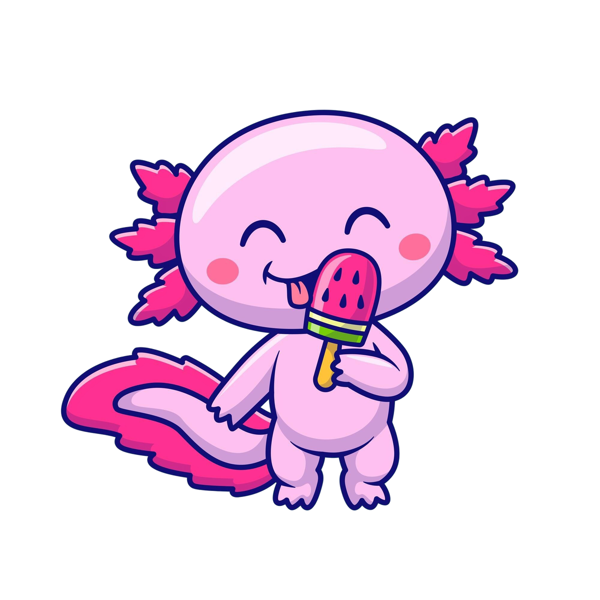
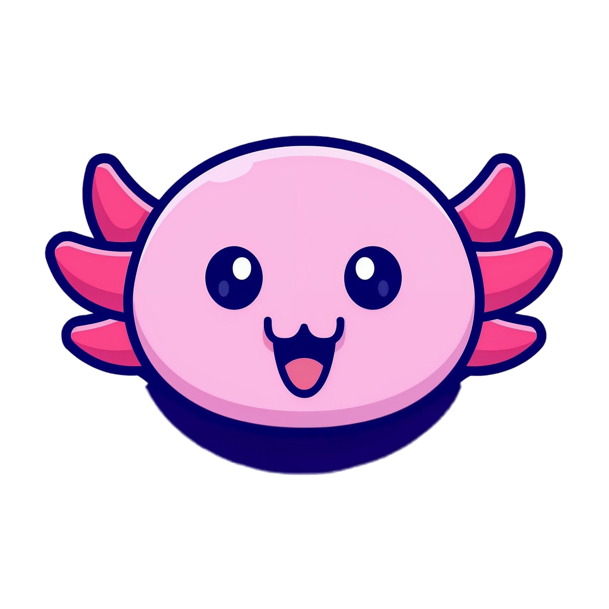
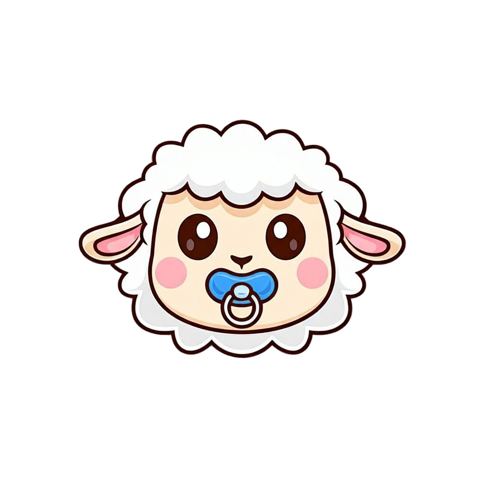
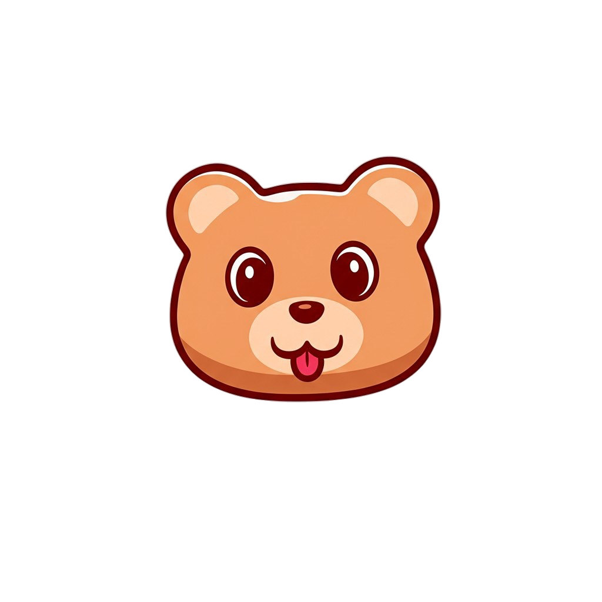
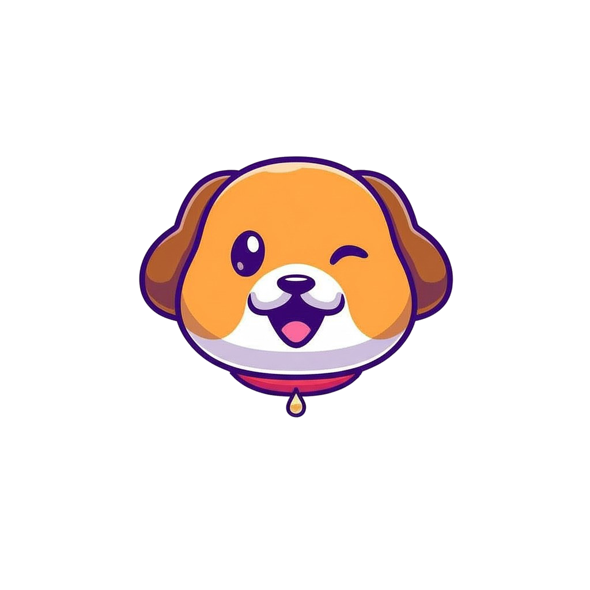

Empezar
¿Ya tienes una cuenta?
Registrar Niños
Niño 1
¿Qué eres?
Selecciona una opción
Ajolotito
Ajolotita
Nombre:
Primer Apellido y Segundo Apellido:
Selecciona tu contraseña con animales (4 animales):
Haz clic en los animales para crear tu contraseña (necesitas 4)

Ajolote

Borrego

Oso

Perro
Borrar Contraseña
Selecciona exactamente 4 animales. Puedes repetir el mismo animal.